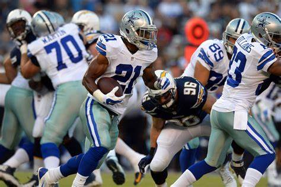
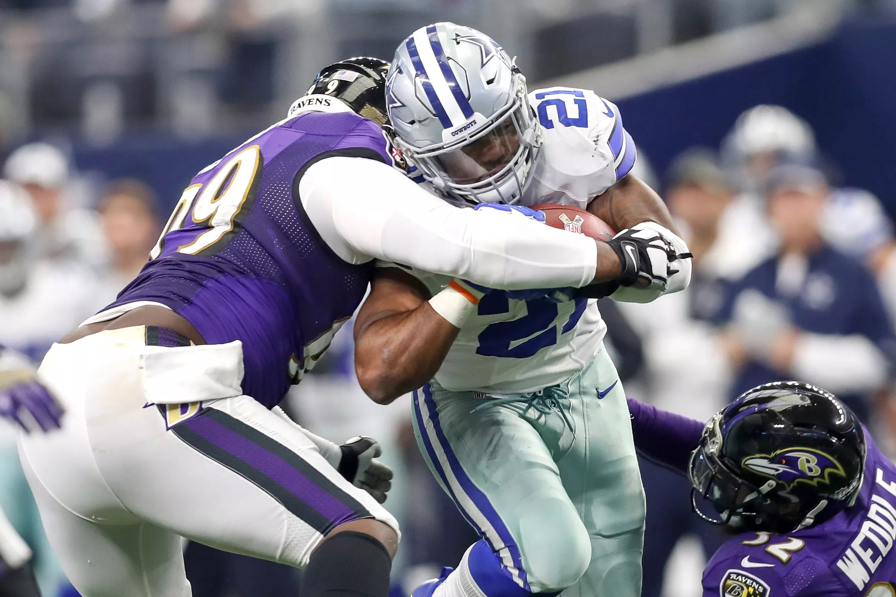

Origens Dallas
O Dallas Cowboys é uma equipe profissional de futebol americano sediada em Dallas, Texas. Foi fundado em
1960 como membro da National Football League (NFL) e rapidamente se tornou uma das equipes mais icônicas
da liga.
Avaliada no ano de 2022 por US$ 8 bilhões pela Forbes, é a franquia esportiva mais valiosa do
planeta, também possui a maior revenda em merchandising da liga, atingindo a marca de US$ 1 bilhão em
2021.
Além disso, lidera a liga em média de público em partidas em casa por treze temporadas, desde 2009, ano
de
inauguração do estádio onde manda seus jogos,
o AT&T Stadium, em Arlington, Texas.
Décadas de Glória
A década de 1970 foi especialmente marcante para os Cowboys. Sob o comando do lendário treinador Tom
Landry e com jogadores notáveis como Roger Staubach, a equipe conquistou dois títulos do Super Bowl
(VI
e XII).

Os anos seguintes viram o Dallas Cowboys manter um padrão de excelência, participando regularmente
dos
playoffs e competindo em várias finais de conferência.

Estádio AT&T
Em 2009, os Cowboys mudaram-se para o magnífico AT&T Stadium, uma estrutura impressionante que reflete o
prestígio e a grandeza da equipe.
A construção começou em 1967 e foi inaugurado em 24 de Outubro de 1971, com um Culto do pastor
norte-americano Billy Graham e uma partida entre Dallas Cowboys e New England Patriots.
Foi feito para substituir o antigo Cotton Bowl. Originalmente projetado como estádio fechado, houve
falhas na construção e não pode-se fechar o teto sobre o campo, ficando com a aparência dos estádios de
futebol europeus.
Legado Duradouro
O Dallas Cowboys não é apenas uma equipe de futebol americano; é uma parte fundamental da cultura
esportiva do Texas. Com uma base de fãs dedicada em todo o país, a equipe continua a inspirar gerações
de torcedores.
Entre todos os times da NFL, nenhum time tem tantos jogadores premiados com MVPs do Super Bowl
quanto o Dallas Cowboys.